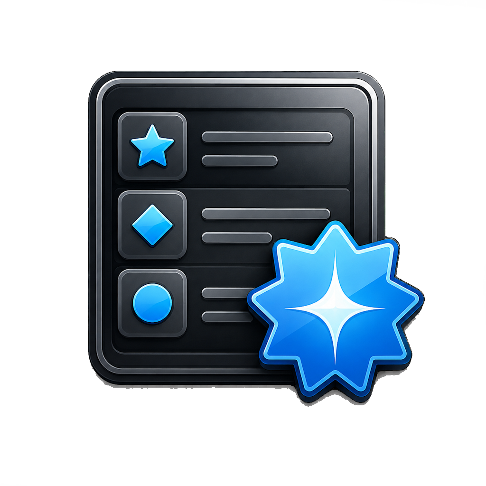

Guided help
Ask Wigand, the PMT assistant, anything about Poor Man's Throttle.
Get help with setup, troubleshooting, usage, and general Poor Man’s Throttle questions.
What is PMT? Poor Man’s Throttle is a completely FREE DIY wireless train control system that lets you run DC and dead-rail (Battery) locomotives from your phone using inexpensive ESP32-based hardware. Build it yourself, tune it yourself, and keep your railroad open, affordable, and fun.
Use this page to install the latest firmware, download the mobile app, open documentation, watch build videos, and get help from Wigand, the PMT AI assistant.

 AI Assistant
AI Assistant
Get help with setup, troubleshooting, usage, and general Poor Man’s Throttle questions.

Poor Man's Features Firmware Installation
Firmware Installation
Match your board to the picture below. Choosing the correct board is important because the Classic ESP32-WROOM-32 and ESP32-S3-N16R8 (N8R8) use different firmware.
Not sure? Do not guess. Compare the board in your hand with both pictures before continuing.
Refresh this page and try again. If the message returns, please contact Poor Man's Throttle support before flashing.
Make sure the board connected to your computer matches this picture before you install.
Use the Poor Man's Throttle app to create a configuration backup before every firmware installation. Normal updates are designed to keep your settings, but a backup gives you a safe recovery copy if something unexpected happens.
When ESP Web Tools asks about erasing the device, leave Erase device off/unchecked. The firmware will be updated without intentionally wiping your saved configuration.
Only choose erase if you intentionally want to delete the saved configuration and start from a clean device. You will need to restore a backup or configure the throttle again.
What’s new in the firmware → latest changes and features
Recommended for most users.
Use this when you intentionally want a particular release, including rolling back after testing.
 App Installation
App Installation
 Android
Android
Download the APK, then open it on your Android device to complete installation.
 Apple
Apple
Download the Poor Man’s Throttle app from the Apple App Store.
Choose a Diesel or Steam sound pack below. The list is loaded directly from the sound-pack folders on the Poor Man's Throttle GitHub project, so newly published ZIP files appear automatically.
Open this section to load the available sound packs.
Loading diesel sound packs…
Loading steam sound packs…
Have a Diesel or Steam sound pack that other Poor Man's Throttle users may enjoy? You can submit the ZIP here for evaluation.
 Documentation
Documentation
Open any guide below in GitHub.
 Videos
Videos
Open any video below in YouTube.
More videos are on the way.